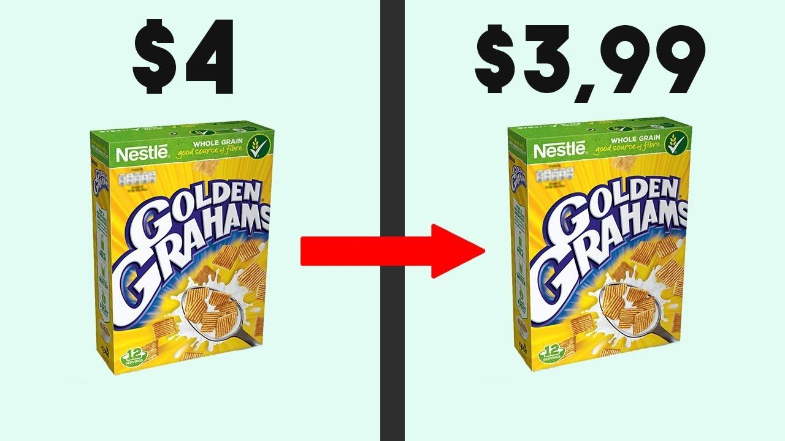
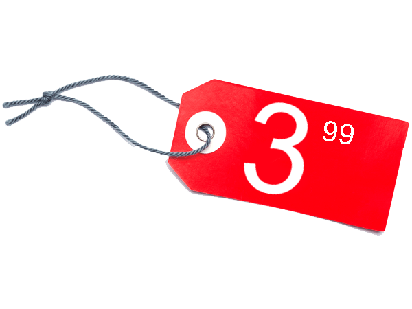
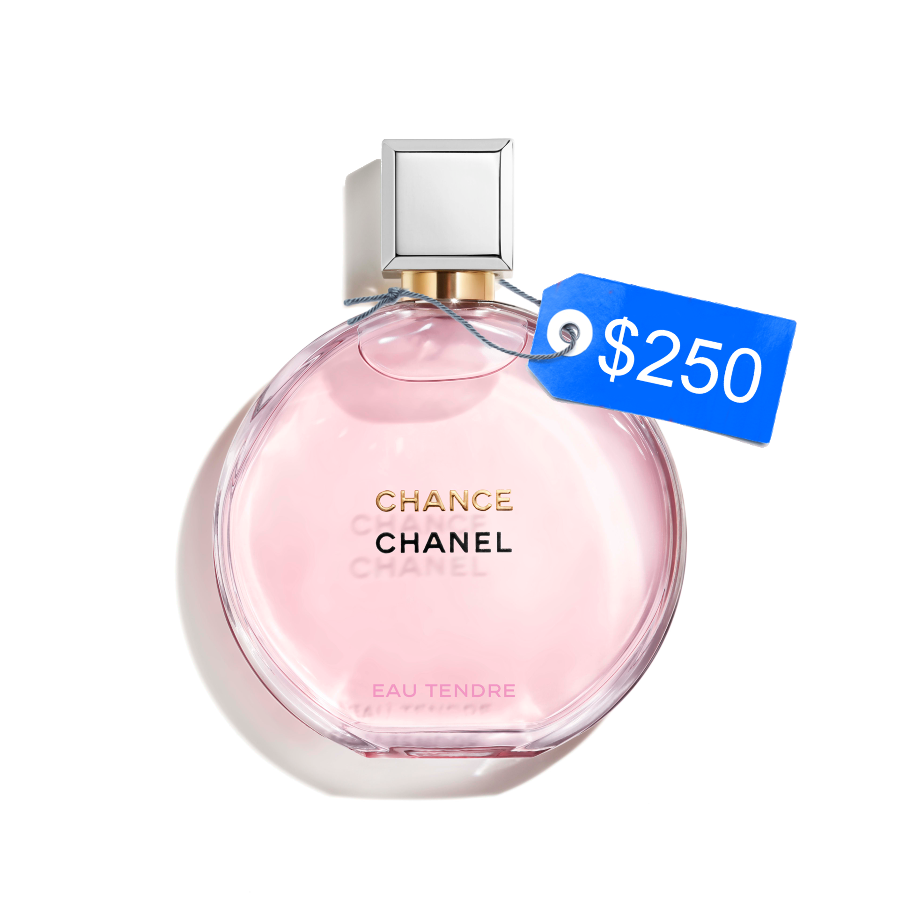
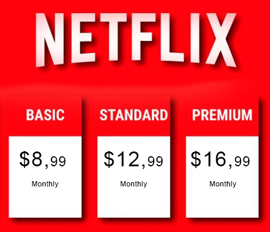

La variable percepción
Percepción de los precios de los productos
En esta entrada del blog partiré mencionando algunas de las estrategias utilizadas para fijar los precios de los productos y cómo los consumidores perciben o reaccionan ante los precios. Todo esto, como base para responder la pregunta: ¿De qué manera son utilizadas estás estrategias y qué hace que sean efectivas?
Como consumidores podríamos pensar que los precios asignados a los productos son elementos objetivos y que procesamos de manera racional. Lo cierto es que estos precios son fijados estratégicamente ya que nuestra psicología humana no nos permite ver el mundo tal y como es, sino que hacemos interpretaciones y percepciones subjetivas de la realidad.
De acuerdo con lo anterior, estudios de Neuromarketing muestran que el precio tiene una influencia psicológica en el consumidor. Su uso adecuado ayuda a persuadirlo en la toma de decisión sobre la compra del producto. Siendo conscientes de esto, las empresas han desarrollado herramientas para fijar los precios de sus productos, teniendo como clave el cerebro del consumidor y la manera en la que codifica los números.
Veamos algunas de estas herramientas:
Precio impar
El precio impar es uno de los recursos más utilizados y efectivos. Estos precios como su propio nombre indica terminan en cifras impares, generalmente 5 o 9. Por ejemplo, un producto se venderá mejor en $3.99 que a $4.00 aunque la diferencia entre ambos valores sea insignificante. El porqué de esto se debe a que, inconscientemente, nuestra mente leerá el valor de izquierda a derecha y el primer número en captar será el que, para nosotros, tenga mayor importancia.
Otro recurso que acompaña a esta herramienta es utilizar un tamaño de fuente inferior para los centavos, es decir, para el 99. De esta manera, la primera cifra ($3) tendrá mayor peso en la percepción del cliente.
Aunque esta estrategia es utilizada en el 60% de los productos vendidos en todo el mundo, ¿Es efectiva para todas las ventas?
La respuesta es NO. Esta técnica solo funcionará cuando se trate de una compra racional con la que nuestra prioridad sea adquirir un producto con una buena relación calidad-precio. Por otro lado, para las compras de tipo emocional, esto no funcionaría muy bien, sobre todo si se trata de artículos de lujo que se adquieren por antojo o deseo. En este caso se utiliza la siguiente herramienta.
Redondeo o precio par
Los precios que acaban en una cifra par transmiten el mensaje de redondeo y exactitud. Generalmente, podemos observar que un reloj o un perfume de alta gama no tendrá un precio con centavos como $249,95 sino que será vendido en un precio redondo como $250.
Cuando vemos el precio de un producto con centavos como sucede con la estrategia del precio impar, automáticamente nuestro cerebro lo asociará a artículos low-cost o que están en descuento. Por el contrario, lo que buscan los productos altamente posicionados son transmitir lujo, sofisticación y exclusividad. Las personas que adquieren este tipo de productos deciden comprarlos, por su calidad y estatus que les transfieren, así que cuando hacen este tipo de compras emocionales no se dejan llevar por que tan barato es el precio.
Sin embargo, esta técnica debe usarse con cuidado, de lo contrario dejaría de ser efectiva. Si se recurre a precios tan redondos como $100, $500 o $1,000, el consumidor interpretará que el precio fue inflado o escogido de forma aleatoria.
Mensualidad o precio a cuotas
Esta estrategia también es utilizada en productos que son altamente costosos. Consiste en presentar al consumidor el precio dividido en la cantidad de tiempo en que pagaría el producto o servicio. Por ejemplo, el precio final de un automóvil es de $21,720. Si el cliente decidiera pagarlo en un plazo de 48 meses, cada mes pagaría $452,5. Este último precio es mucho más atractivo para él, quien en el momento no tendría el dinero suficiente para pagar el precio final del automóvil.
Algo similar sucede, por ejemplo, con las plataformas de streaming. Seguramente los usuarios de Netflix perciben más atractivo pagar $12.99 cada mes que pagar el precio final de un año por $155,88.
A pesar de que los clientes pueden percibir más fascinante la idea de pagar sus productos en un amplio plazo, esta estrategia resultaría disfuncional o innecesaria en productos de bajo costo o de poca calidad.
Reflexiones Finales
Después de analizar algunas de las herramientas más utilizadas para fijar los precios de los productos y darle justificación a la pregunta inicial de si todas estas estrategias eran efectivas para cualquier producto puedo concluir que:
Los consumidores perciben los precios de acuerdo al tipo de necesidad que quieran satisfacer con el producto y la facilidad que tengan para pagar por él. De esta manera, si buscan satisfacer una necesidad emocional, seguramente no les importará pagar un precio alto por un artículo. Sin embargo, si buscan satisfacer necesidades básicas (tales como comida, higiene, entre otras) preferirán precios que favorezcan su economía. Es trabajo de nosotros como mercadólogos entender que la efectividad de las estrategias de fijación de precios depende de esta necesidad que satisface el producto y a la subjetividad del cliente quien percibe la relación entre el valor y la calidad que le otorga el producto, y el precio al que está expuesto.
Ejemplos de estas técnicas aplicadas en los precios de un supermercado
Referencias
Javier Ortego. (2016). El precio y su percepción psicológica en el consumidor. https://bit.ly/3iP39iG
Emprende Aprendiendo. (2018). ¿Cómo Escogen el Precio de los Productos? [Vídeo]. https://bit.ly/2GQUlvt
Joseph, L. (2015). Comportamiento del consumidor. (11a. ed.) Pearson Educación. https://bit.ly/3dn2Fz1